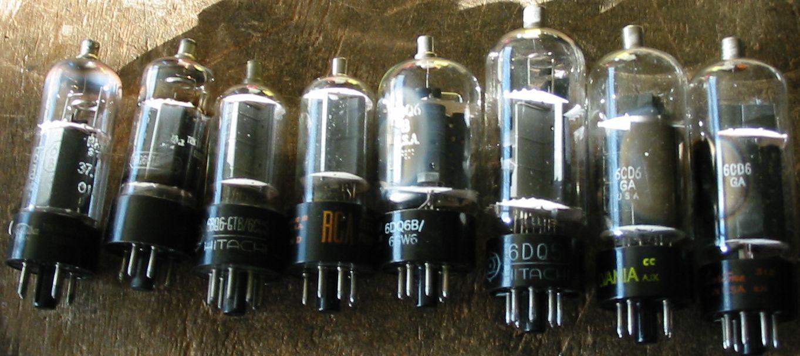
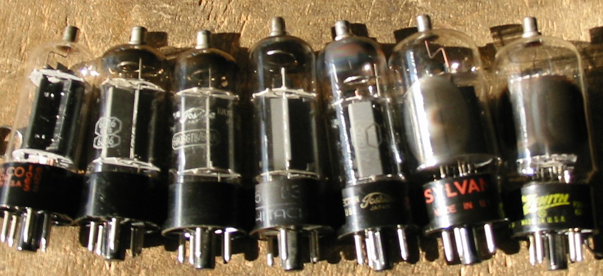

テレビ水平出力管などビーム管のスクリーングリッド電圧について
テレビ水平出力管をオーディオ用に使う場合、その最大スクリーングリッド電圧が、6L6などに代表されるオーディオ管に比べ低く、
3極管接続で使うにしても、ウルトラリニア接続で使うにしても、B+電圧が制限されてしまい、十分な出力が得られないという
問題があります。
私としては規格表に書かれている数字は、たとえば175Vなどが、どこから出たもので、電気的にどのような意味があるのか
ということから考えても、必ずしも守らなければならない数字とは思っていません。
今まで真空管を使った経験から見ても、スクリーングリッドの電圧が300Vでも問題はないはずです。だだし、絶対に最大損失電力を
超えてはいけません。絶対にです。
それともう1つスクリーングリッド電圧は、プレート電圧より高くなってはいけないということもあります。3結の場合強制的にEp=Eg2
ですから、スクリーングリッド損失は無信号時に余裕があれば問題ありません。
ウルトラリニア接続の場合は信号のプラスの時に、プレート電流が増えると、スクリーングリッド電圧は下がり、損失の抑制がききますので、
無信号時の損失が十分に小さければ大丈夫でしょう。
ビーム管として使う場合は、たとえA級動作でも、最大信号時には無信号時の2倍位になります。AB1級ではプレート電流の変化より激しく、
最大10倍くらいまで行きますので、スクリーングリッドを焼いてしまわないようにご注意ということです。
さて、TV水平出力管のスクリーングリッドというのは、低いプレート電圧でも十分に電流が流れるようするのが主な目的で、実際には遮蔽格子
ではなく加速格子なのです。そしてビーム管というのは実に効率よくそれができるようになっていて、低いスクリーングリッド電圧、
少ない電流で十分なのです。つまりスクリーングリッドの感度がいい、逆に言えば、スクリーングリッド弱いということになります。
3結での実験データ
Ep=Eg2、g2に直列に100Ωの抵抗を挿入。
小型の球でも300V位で使いたい、6DQ5など大型の球は400Vはかけたいと思いますが、今回は電源の都合で300Vまでです。
結果的には、スクリーングリッドが焼けることもなく、問題はありませんでした。
6GB3A；Eg1＝-42V、Ep=300V、Ip=40mA、Ig2=3mA；この場合Pp=12W、Pg2=0.9W
プレート損失は規格10Wを超えている。スクリーングリッドの電圧は最大定格を超えているが、しかし損失は全く問題にならないほど少ない。
6GB6；Eg1=-34V、Ep=300V、Ip=50mA、Ig2=3〜5mA；Pp=15W、Pg2=0.9〜1.5W
プレート損失は規格11Wを超えている。スクリーングリッドの電圧は最大定格を超えているが、しかし損失は最大規格2.5Wより少ない。
6DQ5；Eg1=-48V、Ep=250V、Ip=80mA、Ig2=5mA；Pp=20W、Pg2=1.25W
プレート損失は規格20Wを超えていない。スクリーングリッドの電圧は最大定格175Vを超えているが、しかし損失は最大規格3.3Wを超えていない。
Eg1=-76V、Ep=400V、Ip=70mA,Ig2=5mA〜6mA；Pp=28W、Pg2=2〜2.4W
プレート損失は規格24Wを超えている。スクリーングリッドの電圧は最大定格175Vをはるかに超えているが、しかし損失は2.4Wで問題ない。
別な6DQ5； Eg1=-24V、Ep=250V、Ip=80mA、Ig2=6mA〜8mA；Pp=20W、Pg2=1.5〜2W
プレート損失は規格20Wを超えいない。スクリーングリッドの電圧は最大定格を超えているが、しかし損失は全く問題にならないほど少ない。
6CD6/6DN6のデータが見つからないので、再度測定して掲載する予定。(01/05/2010）
6CD6/6DN6の実測データ
E130Lアンプの配線を一部変更して実測して見ました。＋Bは240Vなので十分とはいえませんが、それでも定格は超えています。
この実験の結論としては、＋B250V位で3結で使うのは何も問題はなさそうだということになります。
条件として、カソード抵抗は250Ωではなく、300Ω位がよいと思います。普通の出力トランスは内部抵抗が高いので、
その電圧降下分とカソード抵抗の電圧降下を引くと、実質200V位になります。
6CD6GA-1(Syl、黒プレート)；Isg=7.5mA、Ik=124mA、Rk=250Ω、Ek=31V、Ep=235V、Psg=1.5W、Pp=24W；SG損失は定格3Wの半分で問題なし。
しかし、プレート損失は20%オーバーです。部屋を暗くするとプレートの片側の1部分が赤くなっています。
6CD6GA-2(Syl、黒プレート)；Isg=8.5mA、Ik=116mA、Rk=250Ω、Ek=29V、Ep=235V、Psg=1.7W、Pp=22W；SG損失は問題なし。
プレート損失は10%オーバーですが、部屋を暗くしてもプレートは赤く見えません。
6CD6GA-3(Syl、灰色プレート)；Isg=6.5mA、Ik=126mA、Rk=250Ω、Ek=31.5V、Ep=235V、Psg=1.3W、Pp=25W；SG損失は問題なし。
プレート損失は25%オーバーですが、部屋を暗くしてもプレートは赤く見えません。
6CD6GA-1(Ray、灰色プレート)；Isg=8.8mA、Ik=112mA、Rk=250Ω、Ek=28V、Ep=235V、Psg=1.8W、Pp=23W；SG損失は問題なし。
プレート損失は15%オーバーですが、部屋を暗くしてもプレートは赤く見えません。
6DN6-1(NEC、灰色プレート)；Isg=7.5mA、Ik=120mA、Rk=250Ω、Ek=30V、Ep=235V、Psg=1.5W、Pp=24W；SG損失は問題なし。
プレート損失は20%オーバーですが、部屋を暗くしてもプレートは赤く見えません。
6DQ5-1(Toshiba 、灰色プレート)；Isg=8.3mA、Ik=156mA、Rk=250Ω、Ek=39V、Ep=235V、Psg=1.6W、Pp=29W；SG損失は問題なし。
プレート損失は20%オーバーですが、部屋を暗くしてもプレートは赤く見えません。
この球はミュー2が3と小さいので、バイアスをもっと深くしてやらないといけません。
(23/07/2010)
100Ωの抵抗の意味は高周波の発振防止です。これは入れておいた方が良いです。
現在使用している12GB7シングル3結アンプでの実測データ。（Ep=230V、Rk=640Ω）
(1)Ik=50mA Isg=3mA
(2)Ik=56mA Isg=2.5mA
現在使用しているE130Lシングル3結アンプでの実測データ。（Ep=250V、Rk=250Ω）
(1)Ik=92mA Isg=7mA
(2)Ik=96mA Isg=6.5mA
現在使用している40KG6Aシングル3結アンプでの実測データ。（Ep=255V、Rk=500Ω）
(1)Ik=82mA Isg=1.5mA
(2)Ik=92mA Isg=3.5mA
(02/05/2010）
スクリーングリッド・ドライブでの実験データ
もう一つのスクリーングリッド対策として、スクリーングリッド・ドライブをやってみました。でも、実際には
コントロールグリッドも同時にドライブしているので、スクリーングリッド・コントロールグリッド同時ドライブになりますね。
SGドライブの実験
シングル・モノラルアンプの利点
シングル・モノラルアンプの利点は、真空管が1本しかなくても実験ができることです。
特性のそろった球が4本、ペア・チューブが2組ないと何もできないとかいうのは、遊びとしておもしろくありません。
ペア・チューブについて
ペア・チューブというものは、元々プッシュプルで使う2管の特性をそろえたものであったはずですが、
DCバランスは簡単にとれても、ACバランスはドライブ回路の方も関係するのであまり簡単ではなく、
管球メーカとしても、Gmのそろったものくらいしか出せなかったと思います。
最初にペア・チューブだったとしても、真空管は使っているうちに劣化しますから、いつまでペアで
あるかはわかりません。1本ずつカソード電流がはかれるようにしておけば、時々チェックできます。
劣化した球の面倒の見方について
私も以前仕事で通信機のメインテナンスをしていた頃は、不慮の故障を防ぐために、真空管はどんどん取り替えて
いました。仕事ですからそれでよかったのです。最近になって、真空管を今度は趣味で扱いようになったのですが、
完全に趣味ですから真空管自体を遊びの対象としています。そうなると、美しい真空管だけではなく、少々調子の悪く
なった真空管がかなり興味をそそるようになります。
今週であった例は、少しゲッターが薄くなって真空度が低下した6CD6GAです。アンプに挿すとプレートの内部に青いグロー
が見えます。そして自己発振したかのように電流が急に増えました。とりあえず電源を切り、バイアスを変え電流を制限して
再度スイッチを入れました。まだプレートの内部には青いグローが見えますが、動作は安定したので1時間ほど音楽を演奏させ、
その後再び元のバイアスに戻すと、今度は安定に動作します。そのままさらに1時間くらいたつと、グローはかすかになりました。
次の日は最初から問題なく動作し、めでたしめでたし、ということなのですが、この球は火を入れないで長くおくとまた同じ
ことになると思います。6CD6GAは沢山持っているので、捨ててしまえばいいのですけどね。
先週の例は、エミゲンのToshiba6CB5Aです。NHK35のマークもついていて、昭和38年頃JUNKで入手したものです。アマチュア無線で
807の代わりに長いこと使って、エミゲンの状態になっていました。その球を6CD6-SGドライブのアンプに挿して見たら、Ik=40mA
でやはりかなり疲れているんだなと思っていました。それで何日か優しい音楽を演奏させていたら、日に日に回復してきて、Ik=50mA
、60mA、ついに70mAになり、回復してしまいました。この球はまた少したった後でテストしてみようと思います。
(16/11/2011現在も、UL接続で快調に動作しています。）
劣化した球の面倒の見方について(その2)
今回の例は、ちょっと元気のないToshiba6GB8です。10本中8本は3結で60mAくらいの電流が流れるのですが、2本だけIk=40mAで、
元気がありません。少し使っていたら元気になるかと思い、1本を何日か動作させてみることにしました。スタート時はIk=38mA、
1時間後Ik=45mA、ここで中断し翌朝Ik=50mA、3時間後Ik=55mA、さらに1時間ご56mA、その後は変わらなくなりました。
もう1本は39mAから半日で60mAに回復しました。
この球は本当に回復したのか、少したった後でまたテストしてみようと思います。
2011/05/20
2週間後に上記の球を測定してみましたが、回復した値が保たれており、問題はないようです。
2011/06/03
3chアンプの実験
近所のリサイクルショップでサブウーファーを見つけたの、パソコンから取り外したICアンプでならしてみました。
あまりパワーを入れなくてもかなりの音量になるのですが、真空管アンプの音を聞き慣れた耳にはICアンプの音が
何とも耳障りな音に聞こえます。そこで前に作ったアンプを改造して3chにしてみました。
３chアンプの実験
2010/12/07
UL接続での実験データ
Ep=Eg2、g2に直列に110Ωの抵抗を挿入。カソード抵抗は1KΩ(以下のEpは電圧降下分を差し引いて表示)。
今回は約410Vの電源で実験しました。
結果的には、スクリーングリッドが焼けることもなく、プレートが赤くなることもなく、全く問題はありませんでした。
今回の実験で使用した6BQ6、6DQ6、6DQ5、6CD6です。

6GB6(東芝、中古品）；Ep=340V、Ip=70mA、Ig2=4mA；この場合Pp=24W、Pg2=1.4W
プレート損失は規格11Wを超えているが、赤くもならない。スクリーングリッドの電圧は最大定格を超えているが、
しかし損失は全く問題にならないほど少ない。
6BQ6(東芝、中古品）；Ep=340V、Ip=65mA、Ig2=3.5mA；Pp=22W、Pg2=1.1W
プレート損失は規格11Wを超えているが、赤くもならない。
6BQ6(日立、中古品）；Ep=340V、Ip=60mA、Ig2=4.5mA；Pp=20W、Pg2=1.5W
プレート損失は規格11Wを超えているが、赤くもならない。
6BQ6GTB(RCA、新品）；Ep=340V、Ip=65mA、Ig2=4.5mA；Pp=22W、Pg2=1.5W
プレート損失は規格11Wを超えているが、赤くもならない。
6DQ6(GE、新品）；Ep=340V、Ip=65mA、Ig2=4mA；Pp=22W、Pg2=1.4W
プレート損失は規格18Wを超えているが赤くもならない。
スクリーングリッドの電圧は最大定格を超えているが、しかし損失は最大規格3.6Wより少ない。
6DQ5(日立、中古品)；Ep=310V、Ip=80mA、Ig2=5.5mA；Pp=25W、Pg2=1.7W
プレート損失は規格20Wを超えていない。スクリーングリッドの電圧は最大定格175Vを超えている。
しかし損失は最大規格3.2Wを超えていない。
6CB5A(東芝、中古品)；Ep=340V、Ip=70mA、Ig2=3.6mA；Pp=24W、Pg2=1.2W
プレート損失は規格20Wを超えていない。スクリーングリッドの電圧は最大定格175Vを超えている。
しかし損失は最大規格4Wを超えていない。
この球は昭和35年NHKのマークのあるJUNK品で、かなりエミゲンでしたが、使っているうちに良くなったので
今回の試験でも使ってみました。今現在も快調です。
6CD6GA(Sylvania、新品)；Ep=340V、Ip=70mA、Ig2=4mA；Pp=24W、Pg2=1.4W
プレート損失は規格20Wを超えていない。スクリーングリッドの電圧は最大定格175Vを超えている。
しかし損失は最大規格3Wを超えていない。
6CD6GA(Silveatone、新品)；Ep=340V、Ip=70mA、Ig2=5mA；Pp=24W、Pg2=1.7W
プレート損失は規格20Wを超えていない。スクリーングリッドの電圧は最大定格175Vを超えている。
しかし損失は最大規格3Wを超えていない。
(15/11/2011更新）
6BQ6の耐久力のTEST
Ep=Eg2=330V〜340V。カソード抵抗は1.39KΩ(Epは電圧降下分を差し引いて表示)。
結果的には、約1時間の動作でプレートが赤くなることもなく、全く問題はありませんでした。
今回は真空管の完璧の最高温度も測定、この時代の球は管壁の最高温度220℃が規格です。
なお、TESTした部屋の室温は21℃〜26℃の範囲です。
今回の実験で使用した6BQ6、6GB3、6GB6、6DQ6です。

6BQ6(PHILCO、新品）；Ep=340V、Ip=55mA、この場合Pp=18.7W、管壁最高部の温度214℃
プレート損失は規格11Wを超えているが、赤くもならない。管壁の最高部の温度が規格の220℃に対して
214℃になりましたのでこのくらいが限度でしょう。
6BQ6GTB/6CU6(多分東芝、中古品）；Ep=340V、Ip=51mA、Pp=17.3、管壁の温度196℃
プレート損失は規格11Wを超えているが、赤くもならない。
6BQ6GTB/6CU6(東芝、中古品）；Ep=330V、Ip=55mA、Pp=18,2、管壁の温度173℃
プレート損失は規格11Wを超えているが、赤くもならない。
6GB3A(日立、中古品）；Ep=330V、Ip=52mA、Pp=17.2W、管壁の温度181℃
プレート損失は規格11Wを超えているが、赤くもならない。
6GB6(東芝、中古品）；Ep=330V、Ip=55mA、Pp=18.2W、管壁の温度185℃
プレート損失は規格11Wを超えているが、赤くもならない。
6DQ6B(SYLVANIA、新品）；Ep=330V、Ip=49mA、Pp=16.2W、
プレート損失は規格18W以下で問題なし。
6DQ6B(ZENITR、新品）；Ep=330V、Ip=55mA、Pp=18.1W、
問題なし。
(26/11/2011更新）
back to top
back to home page